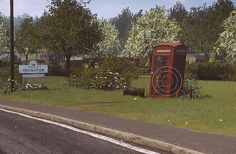
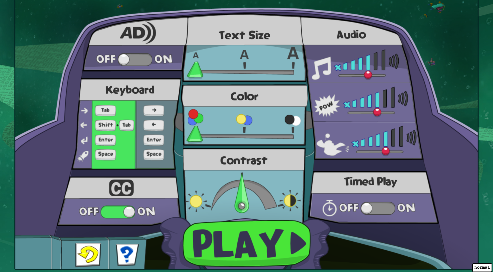
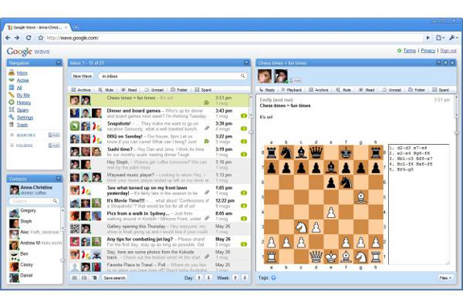

Adaptive Accessibility
Matthew Tylee Atkinson et. al.
@matatk on Twitter
Use the arrow keys to move between slides, press F for full-screen and S to switch to story mode, which gives you all of the background information behind the slides.
This talk was given at the W3C Workshop on Web Games. You may also be interested in reading our position paper and my summary of what I learnt there from an accessibility perspective.
Note: the talks were kept short, to give maximal time for discussion, therefore it's recommended that you check out our position paper for all of the details behind the ideas presented here.
Acknowledgements
First, some acknowledgements. You can find more info on the following in our position paper. The following groups and people contributed to the paper.
Active Game Accessibility
Ian Hamilton
W3C's Accessible Platform Architectures (APA) group and Research Questions sub-group
Thanks also to The Paciello Group for sponsoring my trip.
If you happen to need any accessibility audits, training, strategy advice, UX reviews or anything like that, please consider The Paciello Group.
Why does game accessibility matter?
Accessibility natters for the human benefits it brings: access to culture, recreation, socialising and education.
However, game accessibility differs from "traditional" accessibility in some significant ways…
Games have to be challenging.
The challenge varies from game to game.
Content Accessibility
You can achieve a great deal with content accessibility. By designing the game with accessibility in mind, it can be made friendlier to all players. For example, the following two symbols differ in both shape and colour, thus providing two ways to tell them apart.
On the audio side, you could use spatial audio with good special effects to indicate to the player the type of environment they're in, or where they should explore.
Some accessibility features are more common than you might think. In Assassin's Creed Origins, 60% of players turned subtitles on, so in the following game Ubisoft enabled them by default, and…
95% of Assassin's Creed Odyssey players left subtitles on.
75% of The Division 2 players have turned them on; 50% have them on at the moment.
source for the info on Assassin's Creed Odyssey and The Division 2
Of course, using spatial audio is great for some people, but others (whether they be in a noisy environment, or perhaps have trouble hearing the game) may struggle to get the most out of this. In that case, you could provide visual cues to indicate the information that is coming through sound. Here's a great example of this in "Everybody's gone to the rapture"…

That screen-grab comes from a best practice example from the Game Accessibility Guidelines, which is a very helpful resource for making inclusive decisions when designing your games.

There are several sets of guidelines to which you can refer (these are linked from our position paper)…
Game Accessibility Guidelines, as above
Accessible Player Experiences
W3C Framework for Accessible Specification of Technology (FAST)
W3C Media Accessibility User Requirements (MAUR)
Following guidelines like these helps you make design decisions that include as many people as possible, and there is a lot that can be achieved with content design alone.
The game Railway Hero, covered in more detail in our position paper, provides a self-voiced UI (sound is recorded for each element), separate sound and music tracks, alternative colour modes, closed captions, a switch for disabling timed play and variable font sizes.


However, content design can only go so far—many users have existing assistive technologies and adaptations that they'd like to be able to use with games. Examples include a screen-reader to read and navigate the content/UI on the screen, and custom input devices.
What's missing?
If we wanted to support all possible choices users might have for reading the UI and using their preferred input devices, then we'd have to …
Record audio for every UI element
…in several languages
…at several speeds
Make sure it's navigable with a keyboard
…and a mouse
…and works with a controller
…and with a single switch
Content is hugely important, but it can only take us so far.
Users need to be able to perceive the content,
access the user interface,
and use the input devices they need.
Integrating with existing assistive technologies
Examples of assistive technologies
Large-scale "traditional" assistive technologies such as: Screen readers/magnifiers, mobile zoom.
More focused and possibly platform-specific facilities such as: Text transcription services.
Hardware choices such as: A larger screen, or custom controller.
System settings changes such as: Personalisations such as: contrast, font size or caption presentation.
Individual game settings such as: Variable game parameters.
As we moved down the above list, the idea of what constitutes an assistive technology moved from more "traditional" large-scale software (and sometimes hardware) applications/devices to more focused services, or even individual settings within the platform or game.
As well as differing in size, the technologies may differ in specificity—whether they're applied to the

Example: UI Accessibility
When running an app or game on a computer (or console) the app/game process runs on top of the operating system; we could imagine two layers…
App/Game
Operating System
The traditional stack of running an assistive technology program such as a screen-reader involves an accessibility layer, provided by the OS, that sits between it and the app, as follows.
App/Game
Accessibility layer → Assistive technology
Operating System
If the app uses standard system calls to create things like UI elements, these are intercepted by the accessibility layer, and the user's assistive technology can query the accessibility layer for information on them.
The assistive technology uses the information provided by the accessibility layer to present the app in a way the person using the machine can perceive—maybe by reading out the text of the buttons and controls in the UI; maybe by magnifying the screen and following the focus as it moves about the UI.
This works the same when the app is running in a browser; the browser provides an accessibility tree that exposes various properties of DOM elements (such as the types of controls they represent, or their text content), mirroring its structure.
Web App/Game
Accessibility tree → Assistive technology
Browser
We already have solutions for user interface accessibility on the web, based on this model…

The best (simplest) way to provide accessibility is to use the standard HTML elements for the job. Using the standard HTML elements automatically brings the needed accessibility information (the purpose of the element; its content; its label, state and value, if it's a form control).
The "native" HTML elements also provide accessible keyboard handling by default, such as Space to activate a button and Enter to follow a link.
The following code shows a standard button, link and "landmark region" demarcating where the primary content on the page (which makes it easy for screen-reader users to jump to).
However, if we'd used elements with no inherent meaning, we could add the semantics using special ARIA attributes. This fills in the details in the accessibility tree for assistive technologies. But that's all it does, so keyboard handling code would need to be added manually to fill in that which would've been provided by the native elements above.
The following code is semantically equivalent to the native HTML elements used above.
Assistive technologies (e.g. screen-readers) can pick up on these cues; we need a way for web games to provide them.
If we had such a way to bridge between games and accessibility information, we may be able to start by addressing UI accessibility and then explore from there.
Before we get to discussion questions, I wanted to cover one more example of how accessibility may be afforded.
Example: Authoring Tools
The traditional way to do level editing in games is to use a visual, CAD-like program to construct the level.

However, we could express this problem a different way: we could describe the relationships between the different rooms in the level, and how we might like the map textured and lit, and then have the computer create the actual layout for us.
The following XML description gives us the same information as the design in the CAD-like editor above.
This example comes from the AGRIP AudioQuake Level Description Language, which has very simple geometry due to my poor maths, but has provided a means for blind people to make their own 3D levels. This one looks as follows when played…

Suggested outputs
As mentioned in the paper…
- Map out how to bridge between rendered UI and the semantics assistive technologies need.
- Find, identify or plan to create some reference adaptations at different levels (OS, engine, game).
- Requirements for/identify a framework to bring in adaptations/recognise user personalisations.
- Input for specs such as W3C's FAST and MAUR to see how they may be improved to support games.
- Identify or consider how to make some accessible authoring tools.
Questions for discussion
As covered in the paper…
Can existing accessibility semantics and standards help us meet CVAA requirements?
How can we bridge the gap to existing assistive technologies to realise this support?
What info do we need to be able to express to make games accessible that current assistive technologies can't accept? What types of games are there?
Does it make sense to expose that info via the accessibility layer, or by content/rendering in-keeping with the game world? Which issues are better solved at the design/content/rendering level, with the help of the Game Accessibility Guidelines?
Could research into abstract games be of help to us?
What adaptations for specific engines might be produced that could start assisting people quickly?
How can we make authoring and modding tools accessible?
The slideshow is in slides mode. Arrow keys will move between slides. To use story mode, which includes extra background information on the content, and lets you browse using a screen reader's virtual cursor, press S, or use the Tab key to reach the story mode button.
Story mode allows you to read the presentation as a document, rather than a collection of separate slides, and includes extra background information on the content. It turns off keyboard shortcuts used for navigating between slides and is recommended if you're using a screen reader.
Slides mode displays each slide one at a time, as they would be projected for the audience. The extra information present in story mode is not displayed. Keyboard shortcuts are used to move between slides.